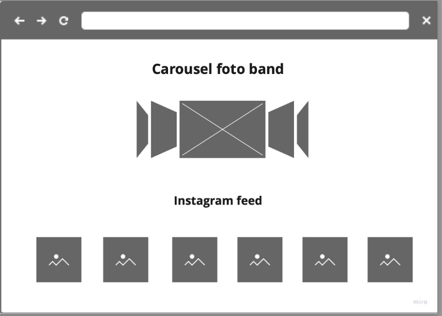

Abstract
Abbiamo volute realizzare questo progetto insieme in quanto una di noi, Elena, conosce di persona la band, e l’altra Camila, avendo origini spagnole e avendo vissuto in Spagna e Colombia, conosce ambienti esteri in cui la musica italiana ha possibilità di diffondersi ed è molto apprezzata, unire le due cose ci è sembrato possibile visto il recente successo della musica italiana all’estero. Abbiamo quindi cercato di creare un sito che possa sia essere un supporto ulteriore alla crescita di un progetto nel suo ambiente di nascita, sia un ponte verso un’ulteriore espansione internazionale grazie al fattore multilinguistico, che poche band di questa grandezza possiedono.
Project Managment Plan
L’obiettivo di questo progetto è quello di promuovere una band emergente cercando di creare una piattaforma che metta in collegamento i contenuti già presenti sul web e i canali social, oltre che di promuovere i loro eventi e concerti. Il target utente, dunque, è quello di persone giovani (under 35) appassionate di musica rock, che abbiano familiarità con i social e che siano anche appassionate di live music; per espandere al massimo il target utente abbiamo cercato di promuovere la band anche all’estero sulla scorta dei recenti successi internazionali della musica italiana (Maneskin, Laura Pausini, Raffaella Carrà). Siccome i paesi esteri che maggiormente apprezzano la musica italiana sono per lo più paesi di lingua spagnola abbiamo creato una versione in spagnolo del sito, e siccome l’inglese rimane la lingua più parlata, una anche in inglese.
Per rispondere a queste esigenze vorremmo creare un sito semplice, fruibile, e che rispecchi a pieno l’identità del gruppo e la sua storia. Per avere una più chiara visione d’insieme di quanto fosse già stato fatto nello stesso ambito, prima della fase di realizzazione ci siamo concentrate su una ricerca di alcuni siti web simili, e ne abbiamo individuati due che ci sono sembrati interessanti: Artic Monkeys,Milky Chance.
Il primo sito è della famosa band Artic Monkeys, e da questo abbiamo preso alcuni spunti come i collegamenti social molto immediati, oltre che il mettere in risalto i video della band in modo che ci si potesse concentrare subito sul prodotto musicale. Del secondo sito abbiamo considerato positiva la grafica a scorrimento, minimale ma funzionale, e l’inserimento di un blog che possa avvicinare la band al suo pubblico, fattore che, trattandosi di un gruppo meno conosciuto del primo, può essere utile a creare un legame con il pubblico, sia quello già esistente che quello potenziale. Siccome noi ci concentriamo su una band emergente, abbiamo pensato di inserire questo elemento nel nostro sito, apportando però qualche modifica: se il loro è un blog mirato ad un progetto specifico, noi intenderemmo aggiungere un aspetto che si concentri maggiormente sul far conoscere le personalità all’interno del gruppo e la loro storia, e dunque delle piccole biografie piuttosto che un vero e proprio blog.
Un sito con finalità simili ma un target utente diverso è quello dell’esperta di cucina vegetale Carlotta Perego.
Similmente a ciò che vorremmo creare noi si tratta di un progetto personale nato sui social, il sito web rispecchia la volontà di raccontare la storia e le persone dietro al progetto e di mettere in luce i loro prodotti, che in questo caso sono ricette e videocorsi di cucina, e non canzoni e video musicali. I servizi offerti dal sito sono simili, e tuttavia il target utente è molto diverso, si rivolge a persone appassionate di cucina vegetale e questa differenza viene resa immediatamente visibile, in primo luogo, dalla grafica e dalla scelta degli elementi presenti nel menù.
La rappresentazione grafica della struttura del sito piuttosto che essere un diagramma ad albero è qui rappresentata come tre elementi in serie, le tre lingue del sito, in quanto non è presente una struttura rigidamente gerarchica, siccome esistono solo 3 pagine html consultabili e la successione di contenuti di ogni pagina è ottenuta tramite lo scrolling.

Le scelte grafiche e stilistiche hanno l’obiettivo di esaltare e valorizzare l’identity già esistente della band: per mantenere un senso di autenticità e contatto con il pubblico si è scelto di usare un linguaggio colloquiale e giovane e di non alterare con elaborazioni eccessive le personalità dei membri del gruppo. La scelta grafica più evidente è quella dei colori che principalmente rientrano nella scala dei grigi: questo è stato voluto per sottolineare, insieme alle foto analogiche e allo sfondo con il vinile, il carattere vintage dell’estetica della band; si ritiene che possa essere una scelta efficace in quanto diventa un elemento caratteristico, e dunque memorabile, del sito, insieme al fatto che gli unici elementi che presentano colori forti sono quelli legati ai social media, fattore che ci sembra possa accentuare i collegamenti con le altre piattaforme. Il font usato è Albert Sans perché per via delle forme tondeggianti ma comunque minimal richiama il logo della band, eppure non è troppo grafico e consente una buona scorrevolezza anche durante la lettura degli elementi testuali più lunghi.
I linguaggi web utilizzati sono due: HTML e CSS. In aggiunta sono stati usati vari strumenti e risorse gratuite a supporto della progettazione web, come bootstrap per la grafica e template HTML, il tool gratuito elfsight che consente di inserire nella pagina un’anteprima del feed Instagram. Il sito verrà pubblicato su github, che consente la pubblicazione gratuita di codici.
Communication Strategy
I principali criteri che abbiamo utilizzato per la realizzazione del nostro sito, e che potremmo considerare come dei fattori positivi dello stesso, riguardano la facilità di fruizione per l’utente. Per fare ciò ci siamo concentrate su una grafica minimale e lo scrolling, in modo che le informazioni siano facilmente raggiungibili. Un altro dei nostri obiettivi è stato quello di favorire un rapido collegamento con le altre piattaforme in cui la band è già presente, sia social come Facebook e Instagram, sia di streaming musicale (Spotify, Apple music, Amazon music) e video (YouTube). Questo facilita l’altro obiettivo, quello di caratterizzare in modo specifico la web identity del gruppo, il loro stile personale. L’ultimo obiettivo è quello di creare una piccola community, per far si che gli utenti si affezionassero abbiamo cercato rendere i membri della band più conoscibili nel loro lato umano inserendo delle brevi biografie. Un fattore che invece potrebbe essere considerato sfavorevole è che, avendo cercato di caratterizzare la band e la sua web identity nel modo più preciso possibile, questo la renda poco attraente per chi non è già appassionato del genere.
L’obiettivo che il sito si prefigge è quello di fare pubblicità ad un gruppo musicale di nicchia. Riteniamo che questo obiettivo possa essere raggiunto con almeno 20 mi piace ad un post di Instagram che sponsorizza il sito. Il sito è destinato a una pluralità di utenti: sarà una piattaforma utile per i follower già esistenti che avranno la possibilità di approfondire la conoscenza della band con contenuti nuovi. Questi utenti verranno raggiunti principalmente tramite i canali sociali già esistenti. L’utente casuale, che capita sul sito dalla navigazione web e non dai social, se interessato, ha la possibilità di spostarsi sui social, lo spettro degli utenti causali raggiungibili è ampliato dal fattore multilinguistico. Ciò che ci aspettiamo è che il sito favorisca la rete di contatti e la community intorno alla band, dandole anche un carattere, e un canale di contatto, di maggiore professionalità.
La promozione del sito è stata effettuata tramite i già menzionati canali social della band e anche tramite le pagine personali dei componenti e di noi che abbiamo realizzato la pagina. Sappiamo che abbiamo raggiunto l’obiettivo che ci siamo prefissate in quanto abbiamo ottenuto più di 20 mi piace al post, di cui almeno 5 da profili di persone che non hanno l’italiano come prima lingua.